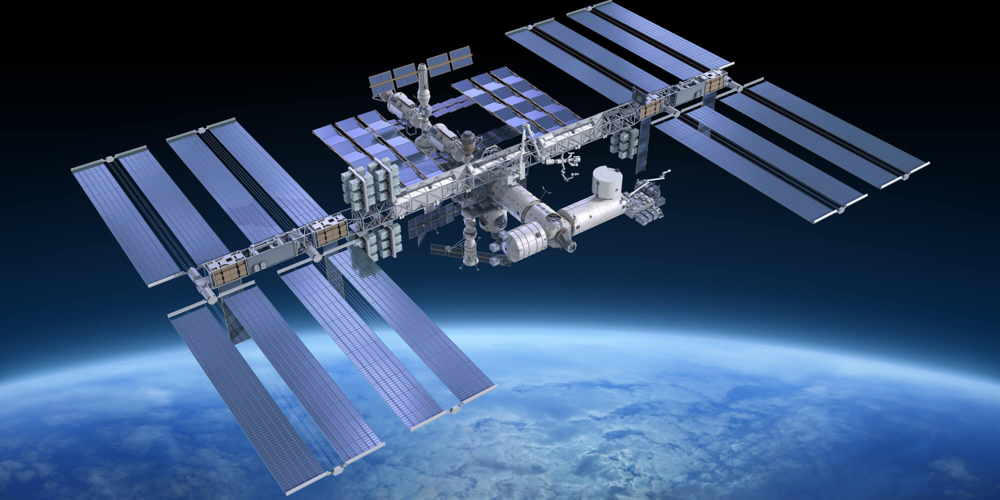
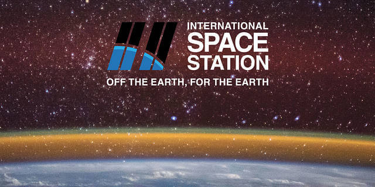

<div class="pages">
  <div data-page="about" class="page no-toolbar no-navbar">
    <div class="page-content">
    
	<div class="navbarpages">
		<div class="navbar_left">
			<div class="logo_text"><a href="index.html"><span>Space</span>UP</a></div>
		</div>			
		<a href="#" data-panel="left" class="open-panel">
			<div class="manu-icon"></div>
		</a>					
	</div>
						
     <div id="pages_maincontent">
      
          <h2 class="page_title">International Space Station</h2>
		  
		  
	<div class="page_single layout_fullwidth_padding">	  
		  
              <blockquote>
			  <h2 style="color: #fff; font-weight: bold;">What is the ISS?</h2>
              The International Space Station (ISS) is a large spacecraft in orbit around Earth. It serves as a home where crews of astronauts and cosmonauts live. The space station is also a unique science laboratory. Several nations worked together to build and use the space station. The space station is made of parts that were assembled in space by astronauts. It orbits Earth at an average altitude of 350 kilometers. It travels at 28 163 km/h. This means it orbits Earth every 90 minutes. NASA is using the space station to learn more about living and working in space. These lessons will make it possible to send humans farther into space than ever before.
			  </blockquote>  

<div class="snippet">
	
	<div class="text">
	<h2>Research & Technology on the Space Station</h2>
	The International Space Station is an unprecedented achievement in global human endeavors to conceive, plan, build, operate, and utilize a research platform in space. With assembly of station at completion, continuity of visiting vehicles, and support of a full-time crew of six, the era of utilization for research advances.	
	</div>
</div>

<div class="snippet">
	<div class="img"></div>
	<div class="text">
	<h2>Research & Technology on the Space Station</h2>
	The International Space Station is an unprecedented achievement in global human endeavors to conceive, plan, build, operate, and utilize a research platform in space. With assembly of station at completion, continuity of visiting vehicles, and support of a full-time crew of six, the era of utilization for research advances.	
	</div>
</div>
				  
				  <div style="clear: both;"></div>  
		<div class="snippet">
		<h2>What astronauts see?</h2>
				  <iframe width="720" height="437" src="https://www.ustream.tv/embed/17074538?html5ui;autoplay=1" scrolling="no" allowfullscreen webkitallowfullscreen frameborder="0" style="border: 0px none transparent; margin:0 auto; width:100%;" title="HDEV video">HDEV video</iframe>
					<h2>Where is the ISS now?</h2>
					<iframe src="https://isstracker.spaceflight.esa.int/" style="border: 0 none transparent; " id="iss-pos" scrolling="no" title="ESU ISS tracking map">ESU ISS tracking map</iframe>
           </div>
         </div>
      
      </div>
      
      
    </div>
  </div>
</div>